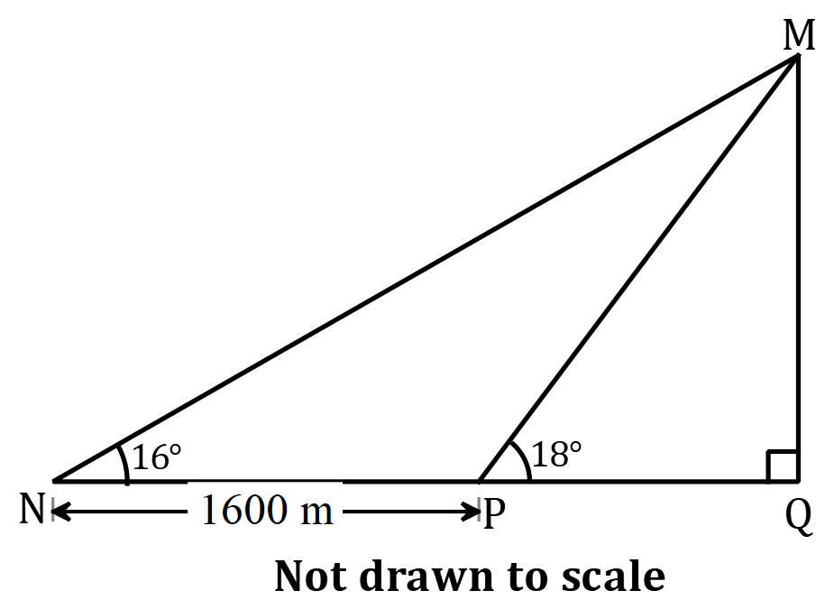

SSSCE 2005
Question 1:
A function \(f:x \to \displaystyle\frac{3x+1}{x-1}, x \neq 1\) is defined on the set \(\{ -1,0,2,3,4,5 \}\).
Find the image of \(-1\) and 3.
Find the image of \(x\) for which \(f(x)=7\).
If \(\cos (\theta +60)^\circ=0.0872\), where \(0^\circ \leq \theta \leq 90^\circ\), find \(\theta\).
Question 2:
Given that \(\log_{10} 6=0.778\), find without using tables or calculator the value of \(\log_{10} 600\).
A factory installs a new machine costing c\(90,000,000.00\). In its operation, it depreciates at the rate of \(15\%\) in the first year and \(10\%\) yearly thereafter. Calculate the estimated value of of the machine at the end of the third year.
Question 3:
In the table, \(W \propto \displaystyle\frac{Q}{R^2}\), where \(W, R\) and \(Q\) are positive integers. Solve for \(w_2\) and \(r_3\).
| W | R | Q |
|---|---|---|
| 3 | 4 | 4 |
| \(w_2\) | 1 | 2 |
| 8 | \(r_3\) | 6 |
Question 4:
- The table shows three classes \(A, B\) and \(C\) in a certain school. The three classes are put together to select a prefect. What is the probability that the prefect will be
- a boy;
- a girl in Class B?
| Class | A | B | C |
|---|---|---|---|
| Boys | 16 | 13 | 13 |
| Girls | 14 | 22 | 18 |
- In a trapezium \(ABCD, |AB|=20\) cm, \(|CD|=15\) cm and lines \(AB\) and \(CD\) are parallel. If the perpendicular distance between the parallel sides is 10 cm, find the area of the trapezium.
Question 5:
a.i. Make \(l\) the subject of the relation \(A=\pi rl +\pi r^2\).
- Find \(l\) when \(r=3, A=176\) and \(\pi = \displaystyle\frac{22}{7}\).
- A ship sails from port \(X\) to port \(Y\), 500 km away on a bearing of \(145^\circ\) and then sails 1,200 km from port \(Y\) on a bearing of \(235^\circ\) to port \(Z\). Calculate the bearing between \(X\) and \(Z\).
Question 6:
The scores obtained by a student in a test are: 21, 25, 27, 25, 27, 21, 24, 23, 23 and 24.
Draw a bar chart to illustrate the information.
- Calculate
- the mean score;
- the standard deviation
Question 7:
- Copy and complete the table of values for the relation \(y=\displaystyle\frac{1}{2}(x-3)(x+1)\) for the interval \(-3 \leq x \leq 5\).
| \(x\) | \(-3\) | \(-2\) | \(-1\) | \(0\) | \(1\) | \(2\) | \(3\) | \(4\) | \(5\) |
|---|---|---|---|---|---|---|---|---|---|
| \(y\) | \(6\) | \(-1.5\) | \(-2\) | \(0\) |
Draw on the same graph sheet and using the same axes, the graph of the relations \(y=\displaystyle\frac{1}{2}(x-3)(x+1)\) and \(y=-\displaystyle\frac{1}{2}x\) for the given interval.
- Use your graphs to solve;
- \((x-3)(x+1)=2\)
- \((x-3)(x+1)=-1\)
Question 8:
If \(123_x = 38_\text{ten}\), find the value of \(x\).
The vertices of a triangle are \(P(1, -3), Q(7,5)\) and \(R(-3,5)\).
Express \(\overrightarrow{PQ}, \overrightarrow{QR}\) and \(\overrightarrow{PR}\) as column vectors. ii.Show that triangle \(PQR\) is isosceles.
Question 9:
- Using a ruler and a pair of compasses only, construct the quadrilateral \(ABCD\) such that \(|AB|=7\) cm, \(|BC|=5\) cm, \(\angle ABC=120^\circ\) and \(|AD|=|AC|=|DC|\).
- Construct the locus,
- \(l_1\), of points equidistant from \(B\) and \(C\).
- \(l_2\), of points equidistant from \(B\) and \(A\).
- Locate, \(O\), the point of intersection of \(l_1\) and \(l_2\).
- With \(O\) as centre, construct a circle to pass through \(A, B\) and \(C\).
- Measure
- angle \(BCD\);
- the radius of the circle.
Question 10:
- A group of 50 girls were asked which of the three colours: red, yellow and green they liked. 5 of then said they liked all three colours, 25 liked red and 22 liked green. 15 liked red and yellow, 12 liked red and green, 4 liked only yellow and 2 liked only green.
- Illustrate the information on a Venn diagram.
- How many girls did not liked any of the three colours?
- A shopkeeper bought 150 articles and paid 40,000.00 cedis for transporting them to her shop. The articles were marked for sale at 10,000.00 cedis each. The shopkeeper sold 90 of them at this price and the remainder at a discount of \(30\%\) on the marked price. Altogether she made a profit of \(32\%\) on the total amount she spent. Calculate the amount she paid for each article.
Question 11:
- A surveyor at sea level observed that the angle of elevation of the top of a mountain, \(M\), from two points \(N\) and \(P\) due west of it are \(16^\circ\) and \(18^\circ\) respectively as shown in the diagram. If \(|NP|=1600\) m and the base of the mountain, \(Q\) is vertically below \(M\), calculate the height of the mountain.

- In the diagram, \(O\) is the centre of the circle. The points \(A, B\) and \(C\) are on the circumference of the circle. Angles \(CAO\) and \(AOB\) are \(32^\circ\) and \(140^\circ\) respectively. Calculate
- angle \(OBC\);
- angle \(COB\).
Question 12:
A pyramid \(ABCD\), whose base \(BCD\) is an equilateral triangle of side 8 cm, has slant edges \(AB, AC\) and \(AD\) each of length 10 cm. The foot of the perpendicular from \(A\) to the base \(BCD\) is \(M\). Calculate
- \(|BM|\)
- \(|AM|\)
- the angle between the face \(ABC\) and the base
- the volume of the pyramid.